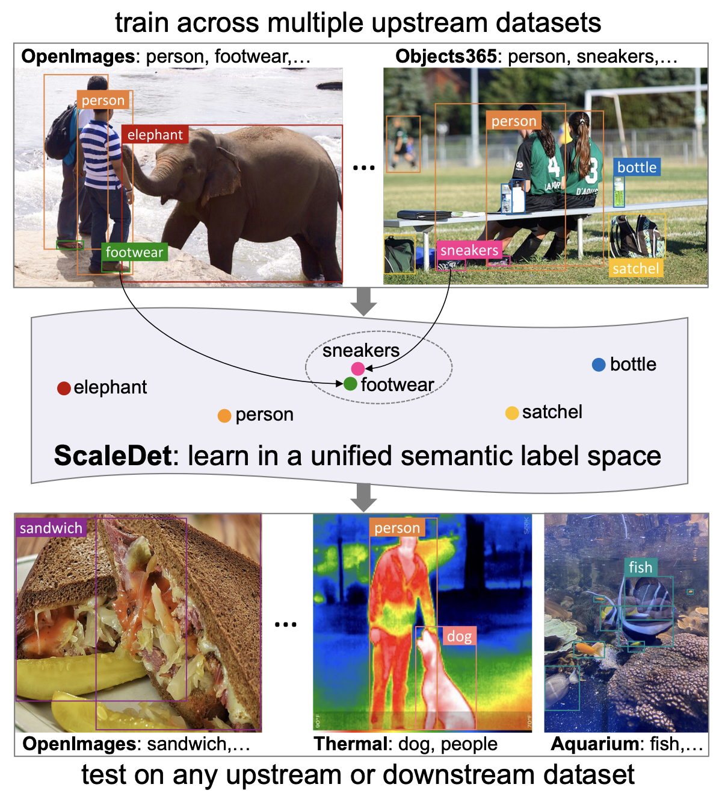
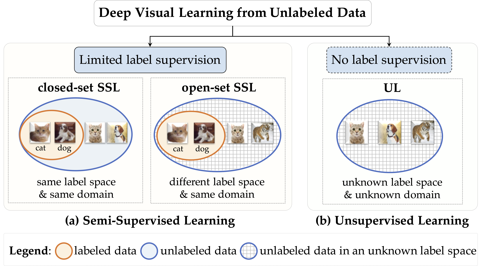
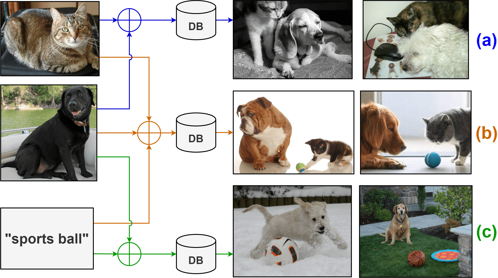

|
Yanbei Chen
|

|
|
Amazon Nova 2: Multimodal Reasoning and Generation Models
|
|
Amazon Nova 1: The Amazon Nova Family of Models: Technical Report and Model Card
|
|
Amazon Nova Multimodal Embeddings: Technical Report and Model Card
|

|
Hyperbolic Learning with Synthetic Captions for Open-World Detection
Fanjie Kong, Yanbei Chen, Jiarui Cai, Davide Modolo Conference on Computer Vision and Pattern Recognition, Seattle, USA, June 2024 [PDF] |
|  |
ScaleDet: A Scalable Multi-Dataset Object Detector
Yanbei Chen, Manchen Wang, Abhay Mittal, Zhenlin Xu, Paolo Favaro, Joseph Tighe, Davide Modolo Conference on Computer Vision and Pattern Recognition, Vancouver, CA, June 2023 [PDF] |
|  |
Semi-Supervised and Unsupervised Deep Visual Learning: A Survey
Yanbei Chen, Massimiliano Mancini, Xiatian Zhu, Zeynep Akata IEEE Transactions on Pattern Analysis and Machine Intelligence (TPAMI), 2022 [PDF] |
|  |
Probabilistic Compositional Embeddings for Multimodal Image Retrieval
Andrei Neculai, Yanbei Chen, Zeynep Akata Conference on Computer Vision and Pattern Recognition, MULA Workshop, New Orleans, USA, June 2022 [PDF] [Code] |

|
Distilling Audio-Visual Knowledge by Compositional Contrastive Learning
Yanbei Chen, Yongqin Xian, Sophia Koepke, Ying Shan, Zeynep Akata Conference on Computer Vision and Pattern Recognition, Online, June 2021 [PDF] [Supplementary] [Poster] [Code] |

|
Image Search with Text Feedback by Visiolinguistic Attention Learning
Yanbei Chen, Shaogang Gong, Loris Bazzani Conference on Computer Vision and Pattern Recognition, Seattle, USA, June 2020 [PDF] [Supplementary] [Poster] [Code] |

|
Semi-Supervised Learning under Class Distribution Mismatch
Yanbei Chen, Xiatian Zhu, Wei Li, Shaogang Gong Association for the Advancement of Artificial Intelligence, New York City, USA, February 2020 [PDF] [Supplementary] [Poster] [Code] |

|
Instance-Guided Context Rendering for Cross-Domain Person Re-Identification
Yanbei Chen, Xiatian Zhu, Shaogang Gong International Conference on Computer Vision, Seoul, Korea, October 2019 [PDF] [Supplementary] [Poster] |

|
Deep Association Learning for Unsupervised Video Person Re-identification
Yanbei Chen, Xiatian Zhu, Shaogang Gong British Machine Vision Conference, Newcastle, UK, September 2018 [PDF] [Poster] [Code] |

|
Semi-Supervised Deep Learning with Memory
Yanbei Chen, Xiatian Zhu, Shaogang Gong European Conference on Computer Vision, Munich, Germany, September 2018 [PDF] [Poster] [Code] |
|